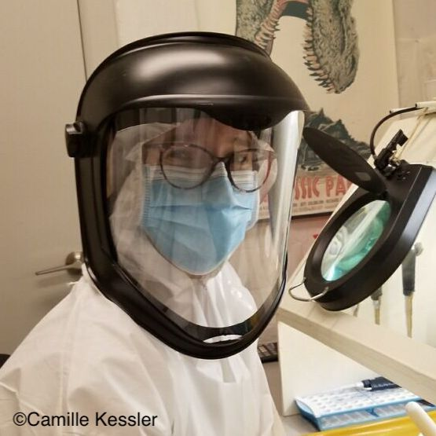
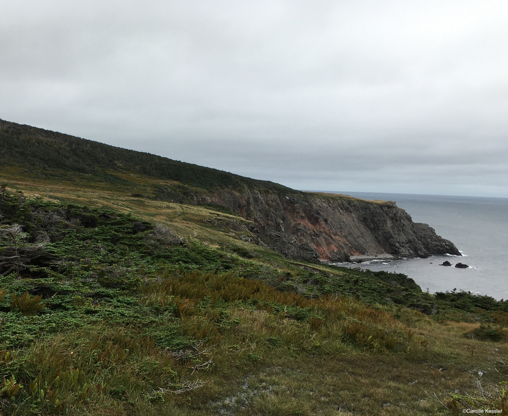

White-tailed deer (Odocoileus virginianus; WTD) and mule deer (Odocoileus hemionus; MD)
are sister species of North American Cervidae that hybridise in areas of sympatry. They are highly
abundant throughout their range and are important on several aspects: First, they have been, and continue to be,
important to indigenous communities as a source of food, clothing and culture. Further, their high abundance
is heavily monetised through hunting-related activities, but also impacts predator-prey dynamics and
vegetation. The speciation and demographic history of Odocoileus remained poorly understood,
mainly due to the unreliable identification of fossils and outdated molecular clock divergence time estimates.
The aim of my thesis is to examine the speciation and demographic history of Odocoileus using genome
scale data and ancient DNA.
The first chapter of my PhD focussed on WTD/MD hybridisation and speciation process. There is ample
modern evidence that both species hybridise in areas of sympatry but the lack of range-scale and genome-wide
analysis has made it difficult to date the onset of the hybridisation. Gene-flow was thought to be
as old as speciation and we therefore wanted to see if ecological speciation was at work in this system.
Surprisingly, we found that gene-flow between WTD & MD was the result of recent secondary contact, as such,
it did not impact the speciation process. The paper was published in Molecular ecology,
here is the full abstract:
Under the ecological speciation model, divergent selection acts on ecological differences between
populations, gradually creating barriers to gene flow and ultimately leading to reproductive isolation.
Hybridisation is part of this continuum and can both promote and inhibit the speciation process. Here, we
used white‐tailed (Odocoileus virginianus) and mule deer (O. hemionus) to investigate patterns of speciation
in hybridising sister species. We quantified genome‐wide historical introgression and performed genome
scans to look for signatures of four different selection scenarios. Despite ample modern evidence of
hybridisation, we found negligible patterns of ancestral introgression and no signatures of divergence
with gene flow, rather localised patterns of allopatric and balancing selection were detected across the
genome. Genes under balancing selection were related to immunity, MHC and sensory perception of smell, the
latter of which is consistent with deer biology. The deficiency of historical gene‐flow suggests that
white‐tailed and mule deer were spatially separated during the glaciation cycles of the Pleistocene and
genome wide differentiation accrued via genetic drift. Dobzhansky‐Muller incompatibilities and selection
against hybrids are hypothesised to be acting, and diversity correlations to recombination rates suggests
these sister species are far along the speciation continuum.
The second chapter of my PhD investigated the demographic history of WTD & MD and the impact of climatic
and anthropogenic pressures on deer populations. Species demographies have been strongly shaped by climatic
pressures such as the Last Glacial Maximum (LGM), but also more recently by anthropogenic factors. WTD & MD
survived in different refugia during the LGM and census data estimations suggest populations were severely
reduced after the European colonisation. We assumed both events had dramatic effect on deer's effective
population size (Ne) so we reconstructed and modelled WTD & MD's demographic histories through time.
We found that WTD population size dramatically declined during the LGM and after European colonisation.
The latter is true for MD as well in addition with patterns of potential conservation concern for that
species. The paper is in review, it is currently only available as preprint on
BioRxiv, here is the full abstract:
The glacial cycles of the Quaternary heavily impacted species through successions of population contractions
and expansions. Similarly, population demography has been intensely shaped by human pressures such as
unregulated hunting and land use changes. White-tailed and mule deer survived in different refugia through
the Last Glacial Maximum, and their populations were severely reduced after the European colonisation.
Here, we analysed 73 re-sequenced deer genomes form across their North American range to understand the
consequences of climatic and anthropogenic pressures on deer demographic and adaptive history. We found a
strong signal of glacial-induced vicariance and demographic decline; notably, there is a severe decline in
white-tailed deer effective population size (Ne) at the end of the Last Glacial Maximum. We found robust
evidence for a colonial impact in the form of a recent and dramatic drop in Ne in all analysed populations.
Historical census size and restocking data show a clear parallel to historical Ne estimates, but temporal
Ne/Nc ratio shows patterns of conservation concern for mule deer. Signatures of selection highlight genes
related to temperature, including a cold receptor previously highlighted in woolly mammoth. We also detected
numerous immune-genes that we surmise reflect the changing land-use patterns in North America. Our study
provides a detailed picture of anthropogenic and climatic-induced decline in deer diversity, and clues to
understanding the conservation concerns of mule deer and the successful demographic recovery of white-tailed
deer.
In progress
In progress, here take a funny picture of me while you wait


This side project was initiated by the Saint-Pierre et Miquelon (SPM) authorities because they were seeing more
and more deer with leucism and malloclusions and were worried the cause might be inbreeding. As the same was true
for Florida Key deer which are much smaller than their mainland counterparts, a project was put together by A.
Shafer to investigate the degree of inbreeding in these populations. The project was done by Brooklyn Cars, an
undergraduate honours thesis student. I was involved through the co-supervision of Brooklyn's thesis,
but also through my native French as an interpreter and presenter during community outreach on SPM
(read more here).
The paper is in review, it is currently only available as preprint on BioRxiv, here is the full abstract:
When a population is isolated and composed of few individuals, genetic drift is the paramount evolutionary
force. Inbreeding might also occur, resulting in genomic regions that are identical by descent, manifesting
as runs of homozygosity (ROHs) and the expression of recessive traits; accordingly, ROH can be used to map
phenotypic traits. Likewise, the genes underlying traits of interest can be revealed by comparing fixed SNPs and
divergent haplotypes between affected and unaffected individuals. Populations of white-tailed deer (Odocoileus
virginianus) on islands of Saint Pierre and Miquelon (SPM, France) have high incidences of leucism and
malocclusions; on the Florida Keys islands (USA), deer exhibit smaller body sizes. Here we aimed to reconstruct
island demography and identify the genes associated with these traits using ROHs, fixed SNPs, and divergent
haplotypes as markers in a pseudo case-control design. The two island populations of interest showed reduced
levels of genomic diversity, a low Ne, and a build-up of genetic load with significant divergence in Key deer.
Key deer showed higher inbreeding levels, but not longer ROHs, consistent with long-term isolation and a
historical bottleneck. We identified multiple trait-related genes in ROHs including LAMTOR2 which has links to
hypopigmentation and HES1 which is involved in the shortening of the maxilla and mandible. Our mixed approach of
linking ROH, fixed SNPs and haplotypes matched a high number (~50) of a-priori body size candidate genes in Key
deer. All three phenotypes showed patterns consistent with a complex trait and non-mendelian inheritance.